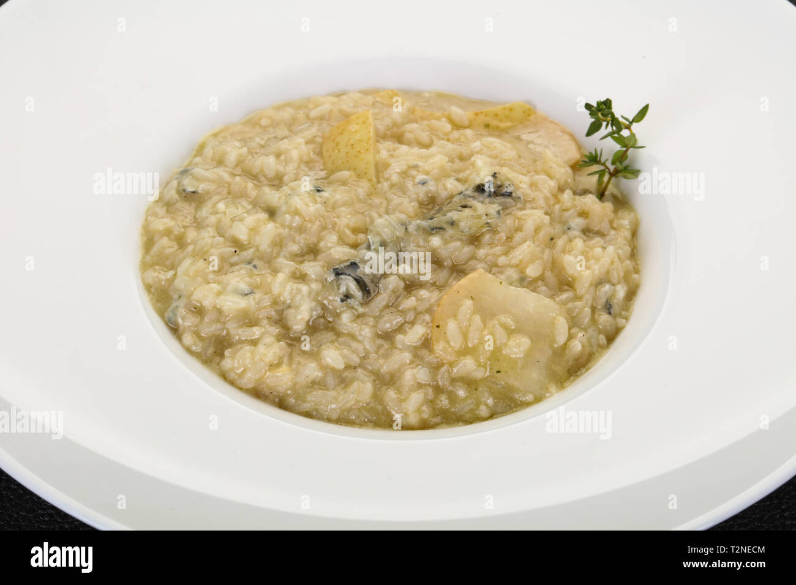

how long does it take to cook? 1 hour at most
how many people does it serve? 2
a classic combination of flavors
Ingredients:
- one cup of risotto rice
- one third of grated gorgonzola cheese
- two seckels(small pears)
- one half of a white onion
- one fourth a cup of white wine
- one litre of vegetable stock, chicken stock also works as a substitute
- one half of a lemon's juice
- one fourth of a butter stick
- any amount of olive oil according the reader's taste
- any amount of parmesan cheese according the reader's taste
- any amount of salt and pepper according the reader's taste
Preparing:
- put a pot with your vegetable stock on high heat stove. lower the flames when it starts boiling and keep it warm
- while the stock is heating up ready the rest of the ingredients: peel and dice the onion into thin small pieces,
clean the pears without taking out their peel. dice one of them into cubes and put the tiny pieces on a separate bowl soaking on the lemon juice.
the other pear should be sliced into four pieces
- take a non-stick pan to the stove at medium heat. as it heats up pour olive oil and put the 4 pear slices onto it.
let the sides rest for 2 minutes each. set it aside as you work on the risotto
- take a medium sized pot to the stove at medium heat. as it heats up, pour some olive oil, throw your onions in
and season them with salt and cook them until they soften. add the rice and mix them for a minute until everything is covered with oil.
season with salt and pepper to taste
- pour white wine and stir until it dries up. add some of the vegetable stock and stir until the rice absorbs it
. repeat the process until the rice is ready: the grain should be soft on the outer edge but still tough inside. add one last scoop of stock before taking it out, the rice should not be completely dry
- add the butter, the gorgonzola cheese and parmesan to the rice and mix. add the pear cubes too, mixing delicately as to not break them.
separate the rice into two plates, put slices of pear on top of each
RETURN TO TOP
RETURN TO THE MAIN PAGE